1004B24 power unit with manual gearbox with hydraulic selection - r r
- Path
- Procedures > 10 ENGINE > 1004 ENGINE AND POWER UNIT > 1004B power unit assembly > 1004B24 power unit with manual gearbox with hydraulic selection - r r
- Kind
- repair procedure (removal / refitting; the operation number is the code)
- Applies to
- engines: 2.0 TS; all production periods
- Interactive page
- https://sloeber94.github.io/elrnDB-a147/en/#/3024926
Applies to: engines: 2.0 TS; all production periods; only with equipment: Cambio robotizzato
 Removing
Removing
 Refitting
RefittingPosition the vehicle on the ramp.
Connect the Examiner diagnostic equipment.
Keep the brake pedal depressed.
Select 'Alfa 937 Selespeed' on the Examiner.
Select 'Control Unit Test' on the Examiner and select 'Marelli Selespeed Automatic Transmission'.
Press 'Active Diagnosis' on the Examiner and select 'Accumulator depressurizing'.
Follow the procedure on the Examiner.
Proceed with the removal 5530B10 battery - r+r .
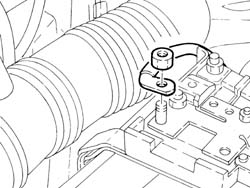
Applies to: engines: 2.0 TS; all production periods; only with equipment: Cambio robotizzato
Proceed with the removal 5530B52 Battery DRIP TRAY/SUPPORT - R.R. .
1. Disconnect the earth cable from the gearbox side rigid power unit mounting.
 | Name | Connector |
|---|---|---|
1 | Earth on engine |
2. Disconnect the electrical connection from the reversing light switch.
| Name | Connector |
|---|---|---|
2 | Reversing lights switch |
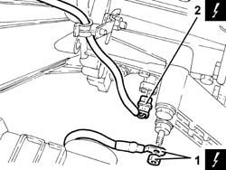
Applies to: engines: 2.0 TS; all production periods; only with equipment: Cambio robotizzato
1. Disconnect the electrical connection from the air flow meter.
| Name | Connector |
|---|---|---|
1 | Air flow meter |
Release the air flow meter wiring from the attachment on the air intake duct.
2. Disconnect the oil vapour recirculation pipe from the air intake duct.
3. Disconnect the air intake duct from the throttle body.
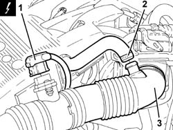
Applies to: engines: 2.0 TS; all production periods; only with equipment: Cambio robotizzato
1. Remove the air filter assembly and intake duct complete with air flow meter after releasing it from the resonator unit.
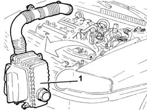
Applies to: engines: 2.0 TS; all production periods; only with equipment: Cambio robotizzato
Remove the electro-hydraulic selection gearbox hydraulic circuit fluid reservoir cap and drain the reservoir using a suitable syringe.
1. Disconnect the pipe between the electro-hydraulic gear selection hydraulic unit and the fluid reservoir, hydraulic unit side.
2. Undo the connector (2a) and disconnect the pipe between the electric pump and the electro-hydraulic gear selection hydraulic unit (2b), hydraulic unit side.
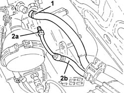
Applies to: engines: 2.0 TS; all production periods; only with equipment: Cambio robotizzato
1. Disconnect the single-acting valve for the brake servo, brake servo side.
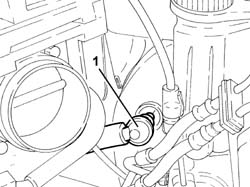
Applies to: engines: 2.0 TS; all production periods; only with equipment: Cambio robotizzato
1. Disconnect the electrical connection from the fuel injection-ignition control unit.
| Name | Connector |
|---|---|---|
1 | Engine management ECU |
2. Disconnect the engine front connection.
| Name | Connector |
|---|---|---|
2 | Front / engine coupling |
3. Disconnect the electrical connection for the Lambda sensor.
| Name | Connector |
|---|---|---|
3 | Lambda sensor downstream of post-catalyzer |
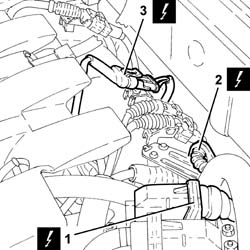
Applies to: engines: 2.0 TS; all production periods; only with equipment: Cambio robotizzato
1. Disconnect the rapid attachment couplings and remove the fuel vapour recovery pipe.
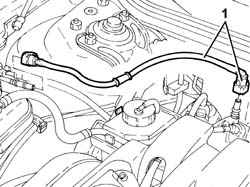
Applies to: engines: 2.0 TS; all production periods; only with equipment: Cambio robotizzato
1. Undo the bolts (1a) and (1b) and remove the power unit reaction rod (1c).
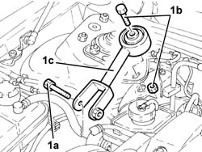
Applies to: engines: 2.0 TS; all production periods; only with equipment: Cambio robotizzato
Drain the power steering fluid from the reservoir using a suitable syringe.
1. Undo and remove the engine oil filler cap.
2. Undo the bolts (2a) and remove the ignition coils cover (2b).
Place the engine oil filler plug back in its housing.
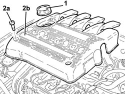
Applies to: engines: 2.0 TS; all production periods; only with equipment: Cambio robotizzato
Discharge the fuel supply pressure with the tool connected to the valve located on the side of the fuel distribution manifold.
 | Name | Country |
|---|---|---|
- | Rapid connector | 1.870.684.000 |
1. Disconnect the rapid attachment on the fuel supply front pipe, distribution manifold side.
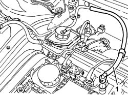
Applies to: engines: 2.0 TS; all production periods; only with equipment: Cambio robotizzato
1. Disconnect the coolant return pipe to the coolant reservoir.
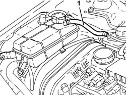
Applies to: engines: 2.0 TS; all production periods; only with equipment: Cambio robotizzato
Drain the air conditioner refrigerant system 5040A10 Air conditioning refrigerant CIRCUIT - Draining and Refilling .
1. Undo the bolt (1a) and disconnect the flange (1b) of the refrigerant inlet/supply pipes from the air conditioner compressor.
2. Undo the nut (2a) and disconnect the flange (2b) of the pipe from the air conditioner condenser to the intermediate connection, intermediate connection side.
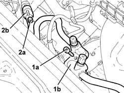
Applies to: engines: 2.0 TS; all production periods; only with equipment: Cambio robotizzato
Proceed with the removal 4450B12 front or rear wheels (two) - r+r .
Proceed with the removal 7055B54 under-engine guard - r r .
Proceed with the removal 7055B64 Engine compartment DUST shield in front wheel arch (one), left or right - R.R. (Right and left sides).
Proceed with the removal 7055B42 Additional FRONT WHEEL ARCH (one), left or right - R.R. (Right and left sides).
1. Disconnect the lower coolant outlet hose from the radiator and drain the engine coolant.
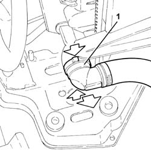
Applies to: engines: 2.0 TS; all production periods; only with equipment: Cambio robotizzato
1. Disconnect the upper coolant inlet hose to the radiator.
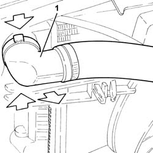
Applies to: engines: 2.0 TS; all production periods; only with equipment: Cambio robotizzato
1. Release the wiring from the attachment on the engine coolant supply pipe.
2. Disconnect the engine coolant supply pipe, water pump rigid inlet pipe side.
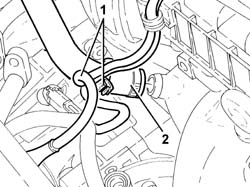
Applies to: engines: 2.0 TS; all production periods; only with equipment: Cambio robotizzato
1. Disconnect the coolant return pipe to the climate control heater, thermostat side.
2. Disconnect the coolant return pipe from the climate control heater, water pump rigid inlet pipe side.
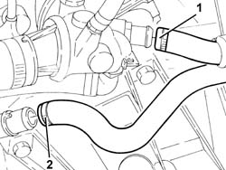
Applies to: engines: 2.0 TS; all production periods; only with equipment: Cambio robotizzato
Proceed with the removal 7210E10 R.R. CENTRE PILLAR .
1. Undo the bolts securing the radiator bottom crossmember to the bodywork.
2. Remove the engine cooling radiator complete with fan, air conditioning condenser with pipes and bottom crossmember.
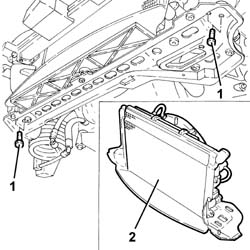
Applies to: engines: 2.0 TS; all production periods; only with equipment: Cambio robotizzato
1. Undo the nuts (1a) and bolts (1b), then remove the exhaust manifold heat shield (1c).
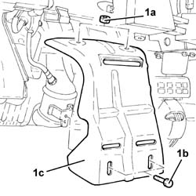
Applies to: engines: 2.0 TS; all production periods; only with equipment: Cambio robotizzato
1. Disconnect the electrical connection for the right Lambda sensor and release the wiring from the bands.
| Name | Connector |
|---|---|---|
1 | Lambda sensor on left pre-catalyzer |
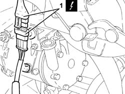
Applies to: engines: 2.0 TS; all production periods; only with equipment: Cambio robotizzato
1. Disconnect the electrical connection for the left Lambda sensor and release the wiring from the bands.
| Name | Connector |
|---|---|---|
1 | Lambda sensor on pre-catalyzer |
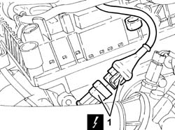
Applies to: engines: 2.0 TS; all production periods; only with equipment: Cambio robotizzato
1. Undo the nuts securing the catalytic preconverter to the exhaust manifold.
2. Unscrew the nuts securing the catalytic preconverter to the catalytic converter
3. Undo the bolts securing the catalytic preconverter bracket to the crankcase.
4. Undo the bolt securing the catalytic converter flexible mounting to the front suspension crossmember.
5. Remove the catalytic preconverter complete with Lambda sensors.
Remove the gaskets.
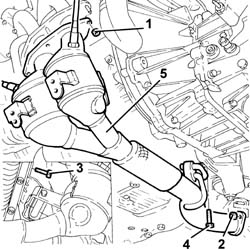
Applies to: engines: 2.0 TS; all production periods; only with equipment: Cambio robotizzato
1. Disconnect the return pipe from the heat exchanger to the power steering fluid reservoir, reservoir side.
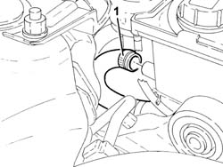
Applies to: engines: 2.0 TS; all production periods; only with equipment: Cambio robotizzato
1. Undo the connector (1a) and disconnect the supply pipe from the power steering pump to the power steering box (1b), pump side.
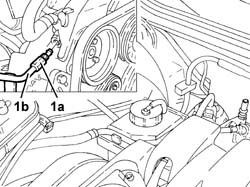
Applies to: engines: 2.0 TS; all production periods; only with equipment: Cambio robotizzato
1. Unscrew the bolts securing the drive shafts to the internal differential/drive shaft
2. Release the front brake hoses, brake pad sensor wiring and ABS inductive sensor wiring from their attachments.
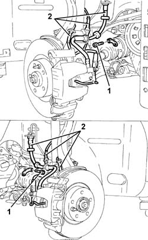
Applies to: engines: 2.0 TS; all production periods; only with equipment: Cambio robotizzato
1. Undo the nuts (1a) and disconnect the front upper wishbones (1b) from the vertical links with the tool (1c).
| Name | Country |
|---|---|---|
1c | Extractor | 1.821.169.000 |
Move the drive shafts away from the differential internal drive shaft/intermediate drive shaft.
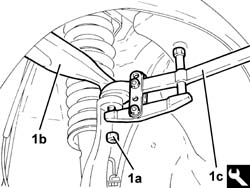
Applies to: engines: 2.0 TS; all production periods; only with equipment: Cambio robotizzato
1. Position a hydraulic jack under the power unit rear rigid mounting.
2. Undo the bolt securing the power unit rear rigid mounting to the flexible mounting.
Lower the hydraulic jack slowly and remove.
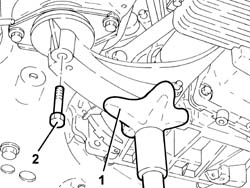
Applies to: engines: 2.0 TS; all production periods; only with equipment: Cambio robotizzato
1. Using a hydraulic hoist fitted with suitable chains positioned as shown in the figure, support the power unit.
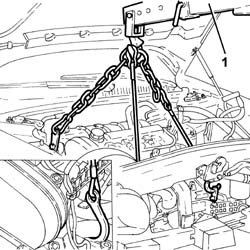
Applies to: engines: 2.0 TS; all production periods; only with equipment: Cambio robotizzato
1. Undo the bolts fixing the power unit gearbox side rigid support to the flexible mounting.
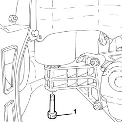
Applies to: engines: 2.0 TS; all production periods; only with equipment: Cambio robotizzato
1. Undo the bolt securing the timing side rigid engine support to the flexible mounting.
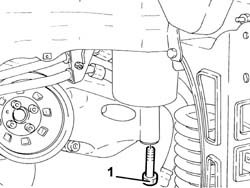
Applies to: engines: 2.0 TS; all production periods; only with equipment: Cambio robotizzato
Slowly lower the power unit with the hydraulic hoist until it is resting on the ground.
Release the hydraulic hoist's chains from the power unit.
Raise the car on a lift.
1. Using the hydrualic hoist fitted with suitable chains as described above, position the power unit on a platform.
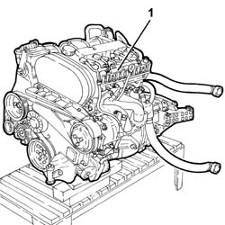
Applies to: engines: 2.0 TS; all production periods; only with equipment: Cambio robotizzato
Refitting
RemovingUsing a hydraulic hoist fitted with suitable chains as described above, position the power unit under the car.
Release the hydraulic hoist's chains from the power unit.
Lower the car with the lift.
Through the engine compartment, support the power unit with the hydraulic hoist fitted with suitable chains.
Slowly lift the power unit with the hydraulic hoist until it is resting in its seating in the engine compartment.
1. Tighten the bolt fixing the timing side rigid engine support to the flexible mounting to the recommended torque.
 | Fastening | Component | Ø | Value (daNm) |
|---|---|---|---|---|
1 | Bolt | ENGINE MOUNT TIMING SIDE | M12 | (Flexible mounting side) 7.9 ÷ 9.7 |
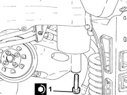
Applies to: engines: 2.0 TS; all production periods; only with equipment: Cambio robotizzato
1. Tighten to the specified torque the bolt fixing the power unit gearbox side rigid support to the flexible mounting.
| Fastening | Component | Ø | Value (daNm) |
|---|---|---|---|---|
1 | Bolt | POWER UNIT GEAR BOX END RIGID MOUNT | M10 | (Flexible mounting side) 4.2 ÷ 5.1 |
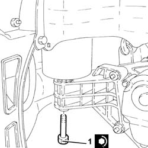
Applies to: engines: 2.0 TS; all production periods; only with equipment: Cambio robotizzato
Release the hydraulic hoist's chains from the power unit.
1. Position a hydraulic jack under the power unit rear rigid mounting and lraise it slowly until it comes into contact with the flexible block.
2. Tighten the bolt fixing the power unit rigid rear support to the flexible mounting to the recommended torque.
| Fastening | Component | Ø | Value (daNm) |
|---|---|---|---|---|
2 | Bolt | POWER UNIT RIGID REAR MOUNT | M12 | (Flexible mounting side) 7.5 ÷ 9.2 |
Remove the hydraulic jack.
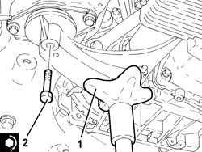
Applies to: engines: 2.0 TS; all production periods; only with equipment: Cambio robotizzato
Refit the drive shafts in their seating in contact with the internal differential drive shaft/intermediate drive shaft.
1. Connect the front upper track control arms (1a) to the steering knuckles and tighten the nuts (1b) to the specified torque.
| Fastening | Component | Ø | Value (daNm) |
|---|---|---|---|---|
1b | Nut | FRONT SUSPENSION TOP LEVER | M10 | (Steering knuckle side) 4.3 ÷ 4.7 |
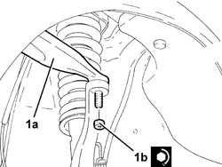
Applies to: engines: 2.0 TS; all production periods; only with equipment: Cambio robotizzato
1. Tighten the bolts securing the drive shafts to the differential internal drive shaft/intermediate drive shaft to the specified torque.
| Fastening | Component | Ø | Value (daNm) |
|---|---|---|---|---|
1 | Bolt | DRIVESHAFT | M8 | (Differential. internal. driveshaft./side..) 3.5 ÷ 4.3 |
2. Secure the front brake hoses, brake pad wear wiring and BAS inductive sensor wiring.
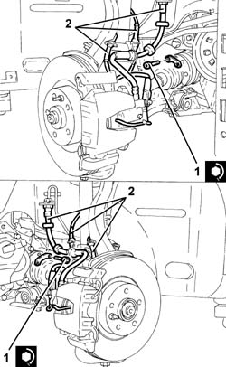
Applies to: engines: 2.0 TS; all production periods; only with equipment: Cambio robotizzato
1. Connect the supply pipe from power steering pump to power steering box (1a), pump side, and tighten the connector (1b) to the specified torque.
| Fastening | Component | Ø | Value (daNm) |
|---|---|---|---|---|
1b | Connector | PIPE BTWN PUMP + POWER STEERING BOX | M16 | (Power assisted steering pump side) 4.5 ÷ 5.5 |
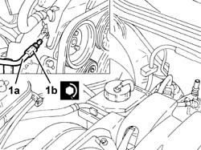
Applies to: engines: 2.0 TS; all production periods; only with equipment: Cambio robotizzato
Connect the power steering fluid return pipe, reservoir side.
1. Place the catalytic preconverter complete with Lambda sensors and gaskets back in its housing.
2. Tighten the bolt securing the catalytic preconverter flexible mounting to the front suspension crossmember.
3. Tighten the bolts securing the catalytic preconverter mounting bracket to the crankcase.
4. Tighten the nuts fixing the catalytic preconverter to the catalytic converter to the specified torque.
| Fastening | Component | Ø | Value (daNm) |
|---|---|---|---|---|
4 | Nut | CATALYTIC PRE-CONVERTER | M8 | (Catalytic converter side) 2.7 ÷ 3.3 |
5. Tighten, to the specified torque, the nuts securing the catalytic preconverter to the exhaust manifold.
| Fastening | Component | Ø | Value (daNm) |
|---|---|---|---|---|
5 | Nut | CATALYTIC PRE-CONVERTER | M8 | (Manifold side) 2.7 ÷ 3.3 |
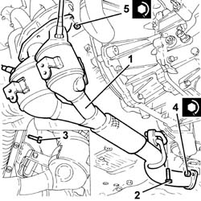
Applies to: engines: 2.0 TS; all production periods; only with equipment: Cambio robotizzato
Connect the electrical connections for the Lambda sensors and fix the electrical wiring.
Place the exhaust manifold heat shield back in its housing and fix it using the nuts.
Place back in its housing the engine cooling radiator, complete with fan, air conditioning condenser with pipes and bottom crossmember.
Tighten the bolts securing the radiator bottom crossmember to the bodywork.
Proceed with the refitting 7210E10 R.R. CENTRE PILLAR .
Connect the coolant return hose from the climate control heater on the side of the rigid inlet pipe to the water pump.
Connect the coolant supply pipe to the climate control heater, thermostat side.
Connect the engine coolant supply pipe, water pump rigid inlet pipe side.
Secure the wiring to the attachment on the coolant supply pipe.
Connect the upper coolant inlet hose to the radiator.
Connect the lower coolant outlet hose from the radiator.
Proceed with the removal 7055B42 Additional FRONT WHEEL ARCH (one), left or right - R.R. (Right and left sides).
Proceed with the removal 7055B64 Engine compartment DUST shield in front wheel arch (one), left or right - R.R. (Right and left sides).
Proceed with the refitting 7055B54 under-engine guard - r r .
Proceed with the refitting 4450B12 front or rear wheels (two) - r+r .
1. Connect the flange of the pipe from the air conditioner condenser to the intermediate connector (1a), intermrediate connector side, and tighten the nut (1b) to the specified torque.
| Fastening | Component | Ø | Value (daNm) |
|---|---|---|---|---|
1b | Nut | COOLANT SYSTEM FITTINGS | M6 | 0.7 ÷ 1.1 |
2. Connect the flange (2a) of the refrigerant inlet/supply pipes to the air conditioner compressor and tighten the bolt (2b) to the specified torque.
| Fastening | Component | Ø | Value (daNm) |
|---|---|---|---|---|
2b | Bolt | COMPRESSOR PIPE CONNECTORS | M10 | (Air conditioning compressor side) 2.8 ÷ 4.2 |
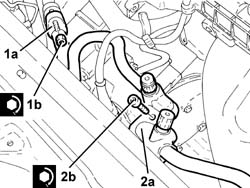
Applies to: engines: 2.0 TS; all production periods; only with equipment: Cambio robotizzato
Connect the joint of the coolant return pipe to the engine coolant reservoir.
Connect the rapid attachment for the front fuel supply pipe, distribution manifold side.
Remove the engine oil filler cap.
Place the ignition coils cover back in its housing and secure it using the bolts.
Place the engine oil filler plug back in its housing.
1. Place the power unit reaction rod (1a) back in its housing and fix it tightening the bolts (1b) and (1c) to the recommended torque.
| Fastening | Component | Ø | Value (daNm) |
|---|---|---|---|---|
1b | Bolt | REACTION ROD | M10 | (Bracket on engine/bracket on bodyshell side) 4.5 ÷ 5.5 |
| Fastening | Component | Ø | Value (daNm) |
|---|---|---|---|---|
1c | Bolt | REACTION ROD | M10 | (Bracket on engine/bracket on bodyshell side) 4.5 ÷ 5.5 |
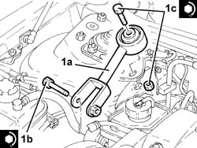
Applies to: engines: 2.0 TS; all production periods; only with equipment: Cambio robotizzato
Refit in its seating the fuel vapour recovery pipe and connect the rapid attachment couplings.
Connect the electrical connection for the rear Lambda sensor.
Connect the engine front coupling.
Connect the electrical connection to the fuel injection-ignition control unit.
Connect the single-acting valve for the brake servo, brake servo side.
1. Connect the pipe between the electric pump and the electro-hydraulic gear selection hydraulic unit (1a), hydraulic unit side and tighten the connector (1b) to the recommended torque.
| Fastening | Component | Ø | Value (daNm) |
|---|---|---|---|---|
1b | Bolt | REACTION ROD | M10 | (Bracket on engine/bracket on bodyshell side) 4.5 ÷ 5.5 |
2. Connect the pipe between the electro-hydraulic gear selection hydraulic unit and the fluid reservoir, hydraulic unit side.
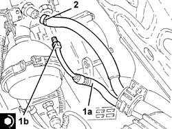
Applies to: engines: 2.0 TS; all production periods; only with equipment: Cambio robotizzato
Place back in its housing the air filter assembly and air intake duct complete with air flow meter and connect it to the resonator unit.
Connect the air intake duct to the throttle body.
Connect the oil vapour recirculation pipe to the air intake duct.
Connect the electrical connection to the air flow meter and secure the electrical wiring with the band to the air intake duct.
Connect the electrical connection to the reversing light switch.
Connect the earth cable to the gearbox side rigid power unit mounting.
Check the level of the fluid in the electro-hydraulic selection gearbox and if necessary top it up 2127C04 ELECTROHYDRAULIC selection gearbox hydraulic system FLUID - Check level and top up if necessary. .
Bleed the air from the electro-hydraulic selection gearbox hydraulic system 2127C06 Electro-hydraulic selection manual gearbox HYDRAULIC SYSTEM - Bleeding air .
Proceed with the refitting 5530B52 Battery DRIP TRAY/SUPPORT - R.R. .
Proceed with the refitting 5530B10 battery - r+r .
Refill the air conditioner refrigerant system 5040A10 Air conditioning refrigerant CIRCUIT - Draining and Refilling .
Refill the cooling system 0010T20 coolant change .
Fill the power steering circuit with the recommended fluid.
 | Type | Component | Name | Qty. |
|---|---|---|---|---|
- | Oli [l] | POWER ASSISTED STEERING CIRCUIT | TUTELA GI/A | 1.2 |
Bleed the power steerign system as described below.
With the front wheels raised off the ground, with the engine switched off, carry out 4-5 complete steering wheel rotation cycles (left and right).
Check and, if necessary, top up the fluid level in the reservoir.
Remove the car from the ramp.
Start the engine and carry out 4 - 5 full steering wheel turn cycles (right and left).
Top up the fluid level in the reservoir.
Topics linked from this page (19)
- 0010T20 coolant change
- 2127C04 ELECTROHYDRAULIC selection gearbox hydraulic system FLUID - Check level and top up if necessary.
- 2127C06 Electro-hydraulic selection manual gearbox HYDRAULIC SYSTEM - Bleeding air
- 4450B12 front or rear wheels (two) - r+r
- 5040A10 Air conditioning refrigerant CIRCUIT - Draining and Refilling
- 5530B10 battery - r+r
- 5530B52 Battery DRIP TRAY/SUPPORT - R.R.
- 7055B42 Additional FRONT WHEEL ARCH (one), left or right - R.R.
- 7055B54 under-engine guard - r r
- 7055B64 Engine compartment DUST shield in front wheel arch (one), left or right - R.R.
- 7210E10 R.R. CENTRE PILLAR
- C40A Earth on engine ( ENGINE )
- D4 Front / engine coupling
- I20 Reversing lights switch
- K15 Lambda sensor on pre-catalyzer
- K16 Lambda sensor on left pre-catalyzer ( ENGINE )
- K17 Lambda sensor downstream of post-catalyzer
- K41 Air flow meter ( ENGINE )
- M10 Engine management ECU